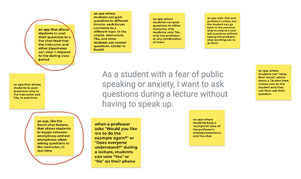
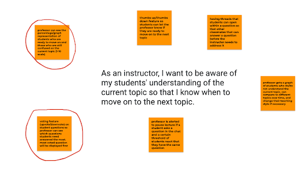

| Relevance | Student POV | Instructor POV | Goal/Reason | Possible Features |
|---|---|---|---|---|
| 1 | As a student with a fear of public speaking or anxiety, I want to ask questions anonymously without having to speak up during a lecture. | As an instructor, I want all my students’ questions, even those scared to speak up, answered so that I can ensure they understand the lecture material. | Equality, all students should be able to have opportunity to ask questions | Anonymous questions, student can toggle between anonymous vs not anonymous |
| 2 | As a student attending class in a big lecture hall, I want to ask questions virtually so that I do not interrupt the flow of the lecture. | As an instructor, I want students to be able to ask questions and answer their peers' questions (if possible) to avoid interrupting the flow of my lecture. | Avoiding interrupted flow of lecture | Chat feature for students to ask questions without interrupting lecture, peer answered questions. |
| 3 | As a student, I want to be on the same page as my instructor and peers so that I can keep up with the lecture material and not fall behind. | As an instructor, I want to be aware of my students' understanding of the current topic so that I know when to move on to the next topic. | If all students understand, it is probably an indicator the professor can move on. | Professor can ask all students if they understand, student can respond thumbs up/thumbs down. Professor sees a percentage/graph representation of these responses. |
| 4 | As a student, I want to be able to ask the instructor for clarification in real time so my question can be answered promptly. | As an instructor, I want my students to be able to ask questions in real time so I know when to clarify. | If multiple students have the same question, it is probably an indicator that the professor should spend more time here | If a student asks a question, other students can react to them. This shows the professor when students have the same question. The message with the most reactions would be answered first |
Out of the 8 user stories we generated, we found 2 of them to be most relevant. Those 2 are ranked by relevance below.
Justification: According to a study done by Dr. Anna Carolina Ferreira Marinho, which aimed to determine the prevalence of fear of public speaking among college students, “63.9% of the sampled students reported a fear of public speaking” [1]. Furthermore, journalist Katrina Schwartz shares stories about a teacher “who noticed her students were afraid to ask questions for fear of being wrong” [2]. Based on the evidence we gathered and our own personal experiences as college students, we concluded that the fear of public speaking is negatively affecting students across many classrooms. Due to a “fear of being wrong,” students are less included to speak up and ask questions when they are confused. If a student is unable to get their questions answered, then this confusion continues to build and ultimately leads to their poor performance in a class. To prevent the embarrassment and anxiety associated with public speaking, a level of anonymity can be introduced to separate the student from their question. This level of anonymity, offered within our proposed solution, will allow students to ask questions without needing to speak up.
Justification: In a study from the Carnegie Mellon University Language Technologies Institute, researchers observed how students get confused in courses, specifically online courses. Within the research, they observed that “without receiving help from other students or teaching staff, students might remain confused. Persistent confusion might promote low self-efficacy… negative attitudes toward the course and ultimately lead to dropout”[9]. In order to address the issue of confusion in classes, “instructors’ ability to monitor confusion from behavioral traces could be leveraged to offer just-in-time support for confused students, and this support might increase the overall course success”[9]. Within our designs, we focus on the idea that offering support to students when they first get confused is the best time. If students wait too long to get help, there is a higher chance of remaining confused.
1. An app that allow students to post their questions to a live chat feed that the instructor and other classmates can view and respond to during the class period.
2. An app with a feature that allows students to toggle between anonymous and not anonymous when asking questions to the instructor, in real-time.
1. Voting feature (upvote/downvote) on students' questions so the professor can see which questions students need answered the most. questions are displayed by most-to-least upvoted.
2. Professor can see the percentage/graph representation of students who are ready to move on and those who are still confused on the current topic (1-10 scale).

[1] Ferreira Marinho, Anna & Medeiros, Adriane & Gama, Ana Cristina & Teixeira, Letícia. (2016). Fear of Public Speaking: Perception of College Students and Correlates. Journal of Voice. 31. 10.1016/j.jvoice.2015.12.012.
[2] Schwartz, K. (2018, May 21). How helping students to ask better questions can transform classrooms. KQED. Retrieved February 24, 2022, from https://www.kqed.org/mindshift/51186/how-helping-students-to-ask-better-questions-can-transform-classrooms
[3] Pashler, H., Dobkins, K., & Huang, L. (2004). Is contrast just another feature for visual selective attention?, 44(12), 1403–1410. https://doi.org/10.1016/j.visres.2003.11.025
[4] Kirkpatrick, A., Connor, J. O., Campbell, A., & Cooper, M. (Eds.). (2018, June 5). Understanding Success Criterion 3.3.2: Labels or Instructions. Web Content Accessibility Guidelines (WCAG). Retrieved April 2, 2022, from https://www.w3.org/WAI/WCAG21/Understanding/labels-or-instructions.html
[5] Norman, D., & Nielsen, J. (n.d.). The Definition of User Experience (UX). Nielsen Norman Group. Retrieved April 3, 2022, from https://www.nngroup.com/articles/definition-user-experience/
[6] Harley, A. (2014, July 27). Icon Usability. Nielsen Norman Group. Retrieved April 4, 2022, from https://www.nngroup.com/articles/icon-usability/
[7] Malamed, C. (2021, October 7). The Small Print: Writing UI Instructions. UX Magazine. Retrieved April 4, 2022, from https://uxmag.com/articles/the-small-print-writing-ui-instructions
[8] Talbot, J., Setlur, V., & Anand, A. (2014). Four experiments on the perception of Bar Charts. IEEE Transactions on Visualization and Computer Graphics, 20(12), 2152–2160. https://doi.org/10.1109/tvcg.2014.2346320
[9] Yang, D., Wen, M., Howley, I., Kraut, R., & Rose, C. (2015). Exploring the effect of confusion in discussion forums of Massive open online courses. Proceedings of the Second (2015) ACM Conference on Learning @ Scale. https://doi.org/10.1145/2724660.2724677
[10] J. Yang and C. Choi, "Enhancing interactiveness of problem-based programming course using anonymous chatting service," 2017 16th International Conference on Information Technology Based Higher Education and Training (ITHET), 2017, pp. 1-6, doi: 10.1109/ITHET.2017.8067828.
[11] Barševska, Z., & Rakele, O. (2019). Color in UI Design. Daugavpils University, Latvia, 79-87.
[12] Robertson, G. G., Henderson, D. A., & Card, S. K. (1991). Buttons as first class objects on an X desktop. Proceedings of the 4th Annual ACM Symposium on User Interface Software and Technology - UIST '91. https://doi.org/10.1145/120782.120786